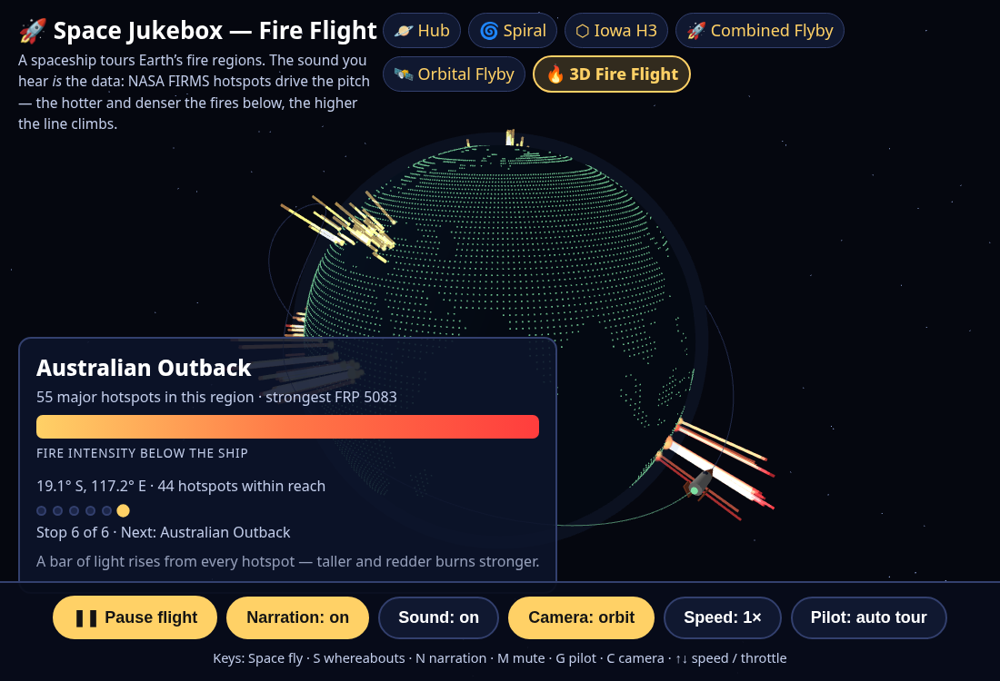
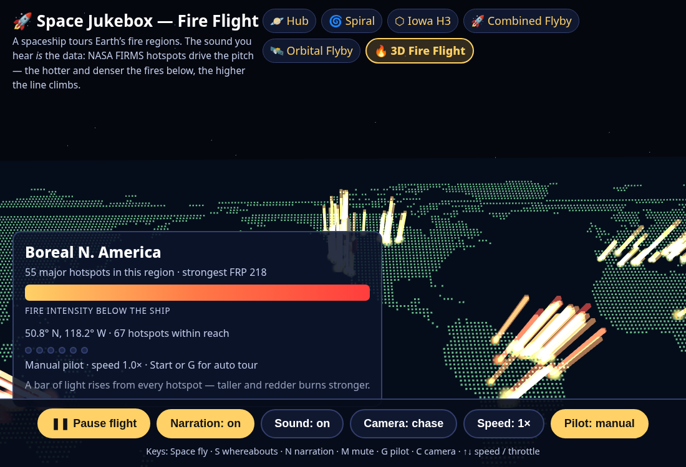

Earth data you can hear.
Challenge: The Earth Information Jukebox
@dmuldrew · Lan Ly · Brian Pickrell · Monica


If fire weather can sing, so can oceans, ice, cities, and storms. Sonification isn't an extra feature — it's another way in, for everyone the pictures left out.
“The planet is singing.
We built the instrument.”
Live demo: dmuldrew.github.io/spatial_sequencers
Original project: github.com/dmuldrew/spatial_sequencers
Built at F5 Tower, Seattle — NASA Space Apps Challenge 2026.